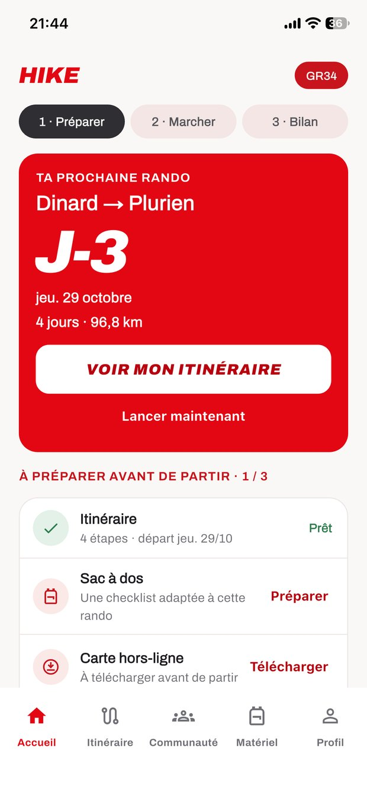
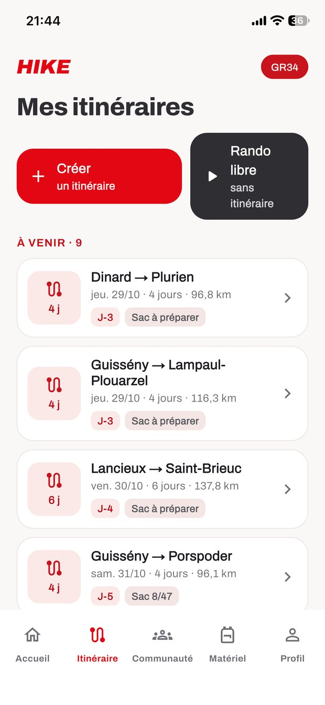
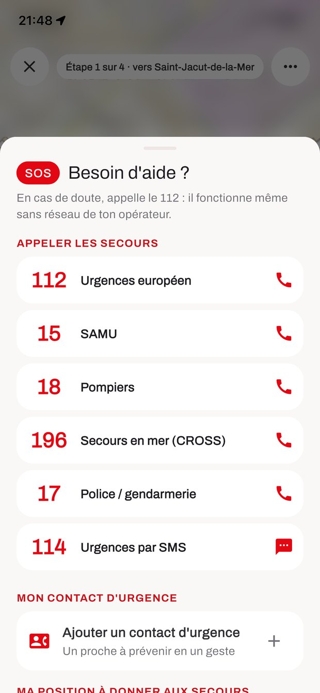
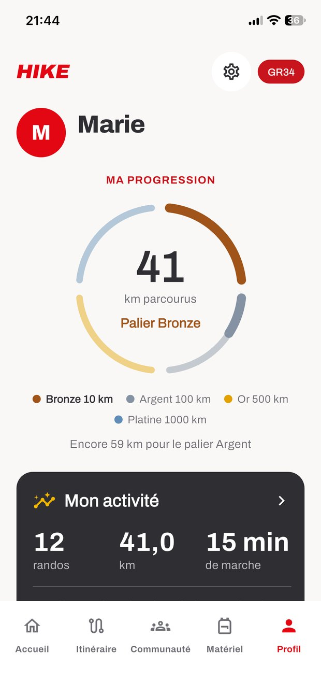

Départ · Perros-Guirec
Du premier au dernier kilomètre, HIKE marche avec toi.
Tu choisis ton départ et ton nombre de jours. HIKE découpe ton itinéraire en étapes qui finissent là où tu peux dormir, te guide même sans réseau et veille sur toi jusqu'à l'arrivée.
Rejoindre la liste d'attenteGratuite, sur iPhone et Android. Sortie au printemps 2027.

Ploumanac'h
Sur le sentier, on finit toujours par se poser les mêmes questions.
HIKE a été pensée pour répondre à tous tes besoins sur le sentier, avant, pendant et après ta rando.
Trégastel
Prépare ta rando avec HIKE.
Indique ton départ, ton nombre de jours et les kilomètres que tu veux marcher chaque jour. HIKE découpe le sentier pour toi.
- Chaque étape finit là où tu peux dormir. Gîte, camping, chambre d'hôte ou hôtel : l'étape s'arrête dans un village où passer la nuit.
- Ton rythme, dans le sens que tu veux. Par durée ou entre deux villages. Tu vois la distance de chaque jour avant de partir.
- Ton sac, sans rien oublier. Météo, nuits en gîte ou en bivouac, repas, niveau : ta liste de matériel se construit pour cette rando-là.

Île Grande
Vis ta rando avec HIKE.
Sur le littoral, le réseau disparaît souvent au mauvais moment. Tu télécharges la carte de ton itinéraire avant de partir, et HIKE te guide quoi qu'il arrive.
- Ta position en direct. Le GPS du téléphone fonctionne sans réseau.
- Le prochain village et les km qui restent. Tu sais toujours où tu en es dans ta journée.
- Une alerte si tu sors du sentier. Pratique quand le balisage se fait discret.
Les secours en un geste.
Une cheville tordue, un brouillard qui tombe, une marée qui monte plus vite que prévu : le bouton SOS reste toujours à portée de main pendant ta rando.
- Tous les numéros d'urgence. 112, SAMU, pompiers, secours en mer (196), gendarmerie, et le 114 par SMS.
- Ta position exacte. Prête à être dictée aux secours, même si tu ne sais pas où tu es.
- Ton contact d'urgence. Un proche à prévenir en un geste.

Les bons arrêts sur ta route
Points d'eau, toilettes, boulangeries, pharmacies, campings, avec la distance au sentier et les horaires.
9 740 points utiles
Trébeurden
Partage ta rando avec HIKE.
Une rando, ça se raconte. HIKE garde la trace de chaque kilomètre et te permet de la partager avec ceux qui comptent.
- Tes proches te suivent en direct. Envoie-leur un lien : ils voient où tu en es, sans installer l'appli.
- Publie ta rando. Tes photos et ton parcours dans le fil HIKE, pour tes amis ou pour tous les randonneurs.
- Fais profiter les autres de tes bons spots. Coins de bivouac, points de vue, sources : les randonneurs les ajoutent sur la carte, au fil de leurs randos.
- Chaque kilomètre compte. Bronze à 10 km, puis Argent, Or et Platine. Et des badges : premier bivouac, Grimpeur, Explorateur…

Locquirec
Pourquoi HIKE existe.
« J'ai créé l'appli que j'aurais voulu avoir sur le sentier. »
Ça fait plus de deux ans que je marche le sentier côtier breton par étapes. À chaque sortie, les mêmes galères : chercher un endroit où dormir au dernier moment, ne pas savoir si j'ai tout dans mon sac, et voir la carte refuser de charger quand le réseau disparaît.
HIKE rassemble tout ce qui m'a manqué, dans une seule appli, pensée pour les randonneurs qui partent plusieurs jours.
Marie, fondatrice de HIKE
Arrivée · Guimaëc
Sois parmi les premiers à marcher avec HIKE.
Inscris-toi sur la liste d'attente : tu seras prévenu dès la sortie, au printemps 2027, et tu pourras l'essayer avant tout le monde.
Rejoindre la liste d'attenteUn email au lancement, puis à chaque nouveau sentier. Pas de spam.